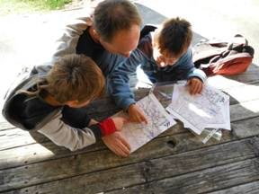
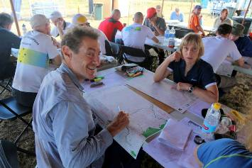

4th October 2013
http://facebook.com/NZRogaining
| New Zealand Rogaining Association (Inc.) 4th October 2013 |
http://facebook.com/NZRogaining |
- Events coming up
- Recent Event results
- WRC2014, Black Hills, South Dakota – registration opens on 1st November
for details of future rogaines.
- the NZRA website event calendar at http://www.rogaine.org.nz/ and
- the Maptalk website, http://www.maptalk.co.nz/events/default.cfm?t=Rogaine

“I thought the map and distribution of the controls was really good, it made it hard to find a good route. I don't think our route was very good especially compared to Tim's (Farrant). We had more climb and their route flowed much better so Tim did well on the planning. Emily (Wall) and Katie (Bolt) also had a much better route than ours even though it was quite different to Tim's in the first section.
We were really impressed with the quality of event that Terry and Ed put on. Good area, good control placements, hard to plan a route, no chance of getting all the controls, just all round good fun”.
